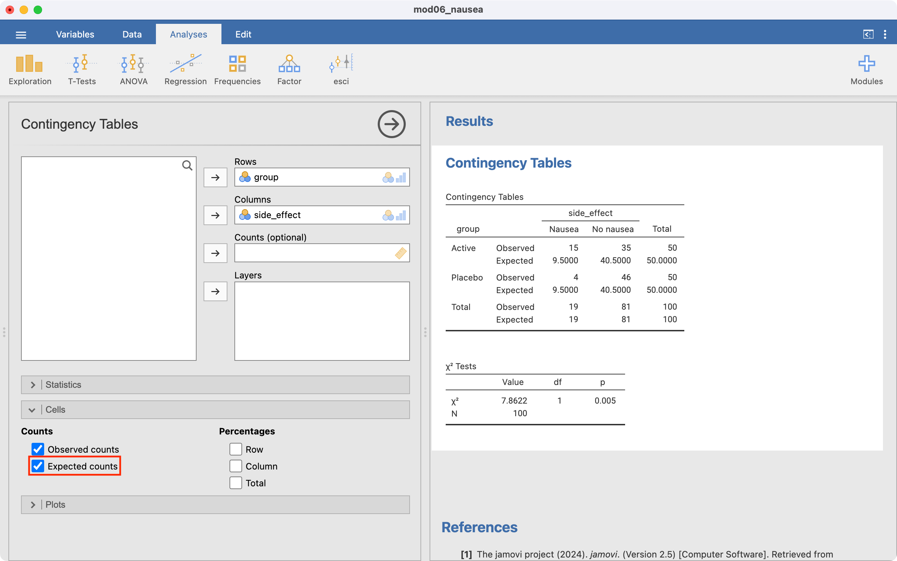
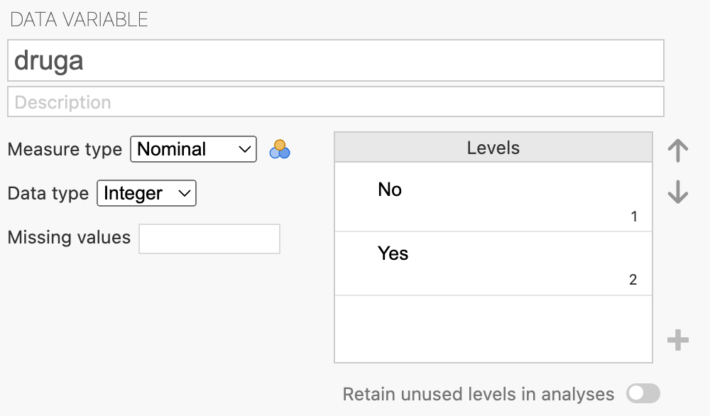
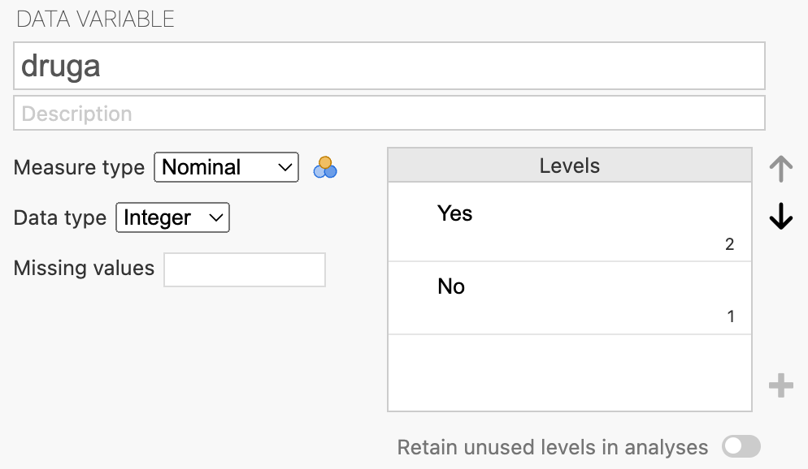
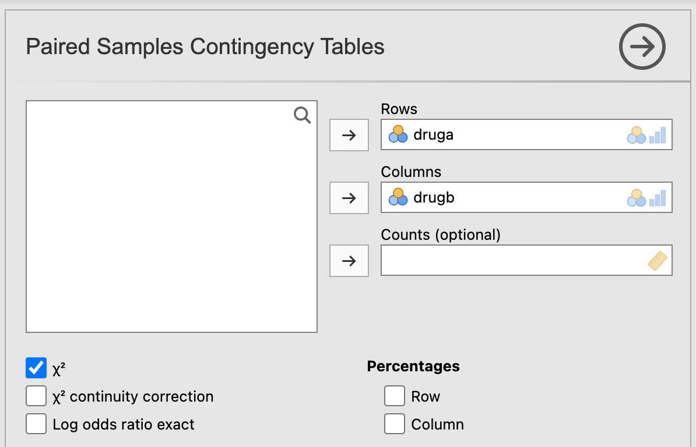

| Negative at follow-up | Positive at follow-up | Total | |
|---|---|---|---|
| Negative at baseline | a | b | a + b |
| Positive at baseline | c | d | c + d |
| Total | a + c | b + d | N |
Learning objectives
By the end of this module you will be able to:
- Use and interpret the appropriate test for testing associations between categorical data;
- Conduct and interpret an appropriate test for independent proportions;
- Conduct and interpret a test for paired proportions;
Optional readings
Kirkwood and Sterne (2001); Chapter 17. [UNSW Library Link]
Bland (2015); Chapter 13. [UNSW Library Link]
7.1 Introduction
In Module 6, we estimated the 95% confidence intervals of proportions and measures of association for categorical data and conducted a significance test comparing a sample proportion to a known value.
When both the outcome variable and the exposure variable are categorical, a chi-squared test can be used as a formal statistical test to assess whether the exposure and outcome are related. The P-value obtained from a chi-squared test gives the probability of obtaining the observed association (or more extreme) if there is in fact no association between the exposure and outcome.
In this Module, we also include tests for a difference in proportion for paired data.
Worked Example
We are using the randomised controlled trial as given in Worked Example 6.4 on the nauseating side effect of a drug.
The research question is whether the active drug resulted in a different rate of nausea than the placebo drug. This is equivalent to testing whether there is an association between nausea and type of drug received (active or placebo). Thus, we will test the null hypothesis that the experience of nausea and the treatment are not related to one another. The null hypothesis is:
- H0: The proportion with nausea in the population receiving the active drug is the same as the proportion in the population receiving the placebo.
The alternative hypothesis can be stated as:
- HA: The proportion with nausea in the population receiving the active drug is different to the proportion in the population receiving the placebo.
7.2 Chi-squared test for independent proportions
A chi-squared test is used to test the null hypothesis that of no association between two categorical variables. First a contingency table is constructed and then we estimate the counts of each cell (i.e. a, b, c and d) that would be expected if the null hypothesis was true. The row and column totals are used to calculate expected counts in each cell of the contingency table as follows:
Expected count = (Row count × Column count) / Total count
Statistical software will do this for us, as described in the jamovi or R sections in this Module.
A chi-squared value is then calculated to compare the expected counts (E) in each cell with the observed (actual) cell counts (O). The calculation is as follows:
\(\chi ^ 2 = \sum \frac{(O - E)}{E} ^2\)
with [Number of rows \(-\) 1] \(\times\) [Number of columns \(-\) 1] degrees of freedom.
As for many statistics, the deviations between the observed and expected values are squared to prevent the negative and positive values balancing one another out.
If the expected counts are close to the observed counts, the chi-squared statistic will be close to zero, and the P-value will be close to 1. The larger the difference between the observed and expected counts, the larger the chi-squared statistic becomes (and the smaller the P-value). A large chi-squared statistic provides more evidence of an association between the exposure and outcome.
Assumptions for using a Pearson’s chi-squared test
The assumptions that must be met when using Pearson’s chi-squared test are that:
- each observation must be independent;
- each participant is represented in the table once only;
- at least 80% of the expected cell counts should exceed a value of five;
- all expected cell counts should exceed a value of one.
The first two assumptions are dictated by the study design. The last two assumptions relate to the numbers in the cells and should be explored when running the test. There should not be too many cells with low expected counts.
Worked Example 7.1
We will revisit Worked Example 6.4, investigating the relationship between nausea and drug exposure:
| Nausea | No nausea | Total | |
|---|---|---|---|
| Active | 15 (30%) | 35 (70%) | 50 (100%) |
| Placebo | 4 (8%) | 46 (92%) | 50 (100%) |
| Total | 19 (19%) | 81 (81%) | 100 (100%) |
We can see from the row percentages that 8% of patients in the placebo group experienced nausea compared to 30% of patients in the active group. If no association existed, we would expect to find approximately the same percent of patients with nausea in each group. Statistical software can calculate the values we would expect if there was no association between nausea and drug exposure (i.e. the expected counts):
| Nausea | No nausea | Total | |
|---|---|---|---|
| Active | 9.5 | 40.5 | 50 |
| Placebo | 9.5 | 40.5 | 50 |
| Total | 19 | 81 | 100 |
For the data being considered from Worked Example 7.1 all cells have an expected count greater than 5 and that the minimum cell count is 9.5. Therefore, it is appropriate to use the Pearson’s Chi-Squared test. Note that the ‘Expected’ counts are higher for the groups with ‘No nausea’ because ‘No nausea’ is more prevalent in the sample than ‘Nausea’.
The chi-squared statistic is calculated as 7.86 with 1 df, giving a P-value of 0.005. Combining these results with the estimated relative risk (from Module 6), we can state:
The proportion with nausea in those who received the active drug is 30%, compared to 8% in those who received the placebo drug. Nausea was more frequent in those who received the active drug (Relative Risk = 3.75, 95% CI: 1.34 to 10.51). There is strong evidence that the proportion with nausea differs between the two groups (\(\chi ^2\) = 7.86 with 1 df, P=0.005).
Fisher’s exact test
If small expected cell counts are present, Fisher’s exact test can be used instead. More information on Fisher’s exact test can be found in Chapter 13 of An Introduction to Medical Statistics, Bland (2015), or Section 17.3 of Essential Medical Statistics, Kirkwood and Sterne (2001). The computation of Fisher’s exact test is complex, and best conducted by statistical software.
A reasonable question could be posed: why not conduct Fisher’s exact test by default? The answer to this is complex.
Fisher’s exact test has quite a restrictive assumption: we assume that the totals of the rows and columns are fixed before we conduct the study.
From Worked Example 7.1, this would be saying that we knew we would end up with 50 people in the active treatment arm, and 50 people in the placebo. This seems reasonable, we can design our study to randomise equal groups. However, Fisher’s exact test also assumes that we know we will obtain 19 people with nausea and 81 people without nausea. We cannot possibly know this before we do the study.
In the case where we cannot assume that the totals of the rows and columns are fixed before we conduct the study, it can be shown that Fisher’s exact test will be conservative (we will be less likely to reject the null hypothesis when it is false, or in other words, the P-value will be larger than it should be).
While there are other tests that perform better than Fisher’s exact test, most of the time we live with this conservative test when we have to (i.e. for small expected cell counts) because Fisher’s exact test is so widely known.
Pragmatically, we use the standard (Pearson) chi-square when we can, and Fisher’s exact test only when we have small expected cell counts.
7.3 Chi-squared tests for tables larger than 2-by-2
Chi-squared tests can also be used for tables larger than a 2-by-2 dimension. When a contingency table larger than 2-by-2 is used, say a 4-by-2 table if there were 4 exposure groups, the Pearson’s chi-squared can still be used.
Worked Example 7.2
The file mod07_allergy.rds contain information about the severity of allergic reaction, coded as absent, slight, moderate or severe. We can test the hypothesis that the severity of allergy is not different between males and females. To do this we can use a two-way tabulation to obtain Table 7.3 which shows the counts and the percent of females and males who fall into each severity group for allergy. The table shows that the percentage of males is higher in each of the categories of severity (slight, moderate, severe) than the percentage of females. Table 7.4 shows the expected counts.
| Sex | Non-allergenic | Slight allergy | Moderate allergy | Severe allergy | Total |
|---|---|---|---|---|---|
| Female | 150 (62.0%) | 50 (20.7%) | 27 (11.2%) | 15 (6.2%) | 242 (100%) |
| Male | 137 (53.1%) | 70 (27.1%) | 32 (12.4%) | 19 (7.4%) | 258 (100%) |
| Total | 287 (57.4%) | 120 (24.0%) | 59 (11.8%) | 34 (6.8%) | 500 (100.0%) |
| Sex | Non-allergenic | Slight allergy | Moderate allergy | Severe allergy | Total |
|---|---|---|---|---|---|
| Female | 138.9 | 58.1 | 28.6 | 16.5 | 242.0 |
| Male | 148.1 | 61.9 | 30.4 | 17.5 | 258.0 |
| Total | 287.0 | 120.0 | 59.0 | 34.0 | 500.0 |
The Pearson chi-squared statistic is calculated as 4.31, with 3 degrees of freedom, providing a P-value of 0.23. Therefore, there is little evidence of an association between gender and the severity of allergy.
7.4 McNemar’s test for categorical paired data
If a binary categorical outcome is measured in a paired study design, McNemar’s statistic is used. This statistic is a form of chi-square applied to a paired situation. A Pearson’s chi-squared test cannot be used because the measurements are not independent. However, McNemar’s test can be used to assess whether there is a significant change in proportions between two time points or between two conditions, or whether there is a significant difference in proportions between matched cases and controls.
For McNemar’s test, the data are displayed as shown in Table 7.5. Cells ‘a’ and ‘d’ called concordant cells because the response was the same at both baseline and follow-up or between matched cases and controls. Cells ‘b’ and ‘c’ are called discordant cells because the responses between the pairs were different. For a follow-up study, the participants in cell ‘c’ had a positive response at baseline and a negative response at follow-up. Conversely, the participants in cell ‘b’ had a negative response at baseline and a positive response at follow-up.
For other types of paired data such as twins or matched cases and controls, the data are similarly displayed with the responses of one of the pairs in the columns and the responses for the other of the pairs in the rows. For paired data, the grand total ‘N’ is always the number of pairs and not the total number of participants.
Worked Example 7.3
Two drugs labelled A and B have been administered to patients in random order so that each patient acts as their own control. The data have been saved as mod07_drug_response.rds. The null hypothesis is as follows:
- H0: The proportion of patients who do better on drug A is the same as the proportion of patients who do better on drug B
Counts and overall percentages are presented in . From the “Total” row in the table, we can see that the number of patients who respond to drug A is 41 (68%) and from the “Total” column the number who respond to drug B is less at 35 (58%), that is there is a difference of 10%.
| Response to Drug B | No response to Drug B | Total | |
|---|---|---|---|
| Response to Drug A | 21 (35%) | 20 (33%) | 41 (68%) |
| No response to Drug A | 14 (23%) | 5 (8%) | 19 (32%) |
| Total | 35 (58%) | 25 (42%) | 60 (100%) |
The difference in the paired proportions is calculated using the simple equation:
\[ p_{A} - p_{B} = \frac{(b - c)}{N} \]
Here, \(p_{A} - p_{B} = \frac{(20 - 14)}{60} = 0.1\)
The cell counts show that 20 patients responded to Drug A but not to drug B, and 14 patients responded to Drug B but not to drug A. McNemar’s statistic is computed from these two discordant pairs (labelled as ‘b’ and ‘c’) as follows:
\[ X^2 = \frac{(b-c)^2}{b+c} \]
with 1 degree of freedom. Using our worked example, the McNemar’s chi-squared statistic is calculated as 1.06 with 1 degree of freedom, giving a P-value of 0.3.
Note that some packages also calculate an “Exact P-Value”. The standard McNemar’s chi-squared statistic is generally recommended, unless the sum of the discordant cells is small (Kirkwood and Sterne define small as less than 10; Section 21.3, Kirkwood and Sterne 2001)). Here, \(b + c = 34\), so reporting the standard McNemar’s chi-squared statistic is appropriate.
As described above, the difference in proportions can be calculated. A 95% confidence interval for this difference can be obtained using statistical software.
In this study of 60 participants, where each participant received both drugs, 41 (68%) responded to Drug A and 35 (58%) responded to Drug B. The difference in the proportions responding is estimated as 10% (95% CI -11% to 31%). There is no evidence that the response differed between the two drugs (McNemar’s chi-square=1.06 with 1 degree of freedom, P=0.3).
7.5 Summary
In Module 6, we estimated proportions and measures of association for categorical data and conducted a one-sample test of proportions. In this module, we conduct significance tests for two or more independent proportions using the chi-squared test. The chi-squared test can also be used to conduct a significance test when there are more than two categories in both variables. The McNemar’s test is used when we have paired data.
jamovi notes
7.6 Pearson’s chi-squared test for individual-level data
Conducting a Pearson’s chi-squared test is done automatically when producing a 2-by-2 table in jamovi. All that we need to do is check that the assumptions of the Pearson’s chi-squared test are met, by examining the Expected counts in each cell.
Worked Example 7.1 is completed as in Module 6, but we first examine the Expected counts (remember that we need to change the order of the levels for the exposure and outcome variables):

After confirming that there are no cells with small expected frequencies, we can interpret the chi-square test. The last section reports the chi-squared test statistic which has a value of 7.86 with 1 degree of freedom and a P-value of 0.005.
If there are small values of expected frequencies, Fisher’s exact test can be requested in the Statistics section:
7.7 Pearson’s chi-squared test for summarised data
When you only have the summarised date (for example, the cross-tabulated data), you need to enter the summarised data manually as we did in Module 6. After defining the Count variable, the Pearson chi-squared test is calculated automatically.
7.8 Chi-squared test for tables larger than 2-by-2
Use the data in mod07_allergy.rds. We use similar steps as described above for a 2-by-2 table:
7.9 McNemar’s test for paired proportions
To perform this test in jamovi, we will use the dataset mod07_drug_response.rds. As with all 2-by-2 tables, we should check that the variables are set up with the first level of the variable being the outcome of interest using Data > Setup:

Both variables, druga and drugb are set up with “No” being the first level. We need to change the order and define “Yes” as the first level (See Module 6 jamovi notes on how to do this):

The McNemar’s test of paired proportions can be conducted at Analyses > Frequencies > Contingency Tables > Paired Samples > McNemar test:

Note that jamovi does not currently provide an estimate of the difference in paired proportions, or a confidence interval for the difference.
R notes
7.10 Pearson’s chi-squared test for individual-level data
We will demonstrate how to use R to conduct a Pearson chi-squared test using Worked Example 7.1.
library(jmv)
library(dplyr)
nausea <- readRDS("data/examples/mod06_nausea.rds")
head(nausea) group side_effect
1 Placebo Nausea
2 Placebo Nausea
3 Placebo Nausea
4 Placebo Nausea
5 Placebo No nausea
6 Placebo No nauseastr(nausea$group) Factor w/ 2 levels "Placebo","Active": 1 1 1 1 1 1 1 1 1 1 ...
- attr(*, "label")= chr "Group"str(nausea$side_effect) Factor w/ 2 levels "No nausea","Nausea": 2 2 2 2 1 1 1 1 1 1 ...
- attr(*, "label")= chr "Side effect"The columns group and side_effect have been entered as factors, with “Placebo” and “No nausea” as the first levels. We should use the relevel() command to re-order the factor levels.
nausea <- mutate(nausea, group = relevel(group, ref = "Active"),
side_effect = relevel(side_effect, ref = "Nausea"))
str(nausea$group) Factor w/ 2 levels "Active","Placebo": 2 2 2 2 2 2 2 2 2 2 ...str(nausea$side_effect) Factor w/ 2 levels "Nausea","No nausea": 1 1 1 1 2 2 2 2 2 2 ...After confirming the factors are appropriately defined, we can construct our 2-by-2 table and view the expected frequencies.
contTables(
data = nausea,
rows = group, cols = side_effect,
exp = TRUE
)
CONTINGENCY TABLES
Contingency Tables
──────────────────────────────────────────────────────────────
group Nausea No nausea Total
──────────────────────────────────────────────────────────────
Active Observed 15 35 50
Expected 9.500000 40.50000 50.00000
Placebo Observed 4 46 50
Expected 9.500000 40.50000 50.00000
Total Observed 19 81 100
Expected 19.000000 81.00000 100.00000
──────────────────────────────────────────────────────────────
χ² Tests
─────────────────────────────────────
Value df p
─────────────────────────────────────
χ² 7.862248 1 0.0050478
N 100
───────────────────────────────────── After confirming that there are no cells with small expected frequencies, we can interpret the chi-square test. The last section reports the chi-squared test statistic which has a value of 7.86 with 1 degree of freedom and a P-value of 0.005.
If there are small values of expected frequencies, Fisher’s exact test can be requested using fisher = TRUE:
contTables(
data = nausea,
rows = group, cols = side_effect,
fisher = TRUE
)
CONTINGENCY TABLES
Contingency Tables
───────────────────────────────────────────
group Nausea No nausea Total
───────────────────────────────────────────
Active 15 35 50
Placebo 4 46 50
Total 19 81 100
───────────────────────────────────────────
χ² Tests
──────────────────────────────────────────────────────
Value df p
──────────────────────────────────────────────────────
χ² 7.862248 1 0.0050478
Fisher's exact test 0.0094886
N 100
────────────────────────────────────────────────────── 7.11 Pearson’s chi-squared test for summarised data
When you only have the summarised date (for example, the cross-tabulated data), you need to enter the summarised data manually. As we did in Module 6, the 2-by-2 table can be entered as four lines of data:
drug_aggregated <- data.frame(
group = c("Active", "Active", "Placebo", "Placebo"),
side_effect = c("Nausea", "No nausea", "Nausea", "No nausea"),
n = c(15, 35, 4, 46)
)The contTables() function is used in the usual way, specifying count=n.
7.12 Chi-squared test for tables larger than 2-by-2
Use the data in mod07_allergy.rds. We use similar steps as described above for a 2-by-2 table.
allergy <- readRDS("data/examples/mod07_allergy.rds")
head(allergy) id asthma hdmallergy catallergy infection sex maternalasthma
1 1 No Yes No Yes Female No
2 2 Yes No No No Female No
3 3 Yes No No No Female No
4 4 No No No No Male No
5 4 Yes Yes Yes No Female No
6 5 Yes Yes Yes No Female No
allergy_severity
1 Moderate allergy
2 Non-allergic
3 Non-allergic
4 Non-allergic
5 Moderate allergy
6 Moderate allergycontTables(
data = allergy,
rows = allergy_severity, cols = sex,
pcCol = TRUE
)
CONTINGENCY TABLES
Contingency Tables
──────────────────────────────────────────────────────────────────────────────
allergy_severity Female Male Total
──────────────────────────────────────────────────────────────────────────────
Non-allergic Observed 150 137 287
% within column 61.98347 53.10078 57.40000
Slight allergy Observed 50 70 120
% within column 20.66116 27.13178 24.00000
Moderate allergy Observed 27 32 59
% within column 11.15702 12.40310 11.80000
Severe allergy Observed 15 19 34
% within column 6.19835 7.36434 6.80000
Total Observed 242 258 500
% within column 100.00000 100.00000 100.00000
──────────────────────────────────────────────────────────────────────────────
χ² Tests
─────────────────────────────────────
Value df p
─────────────────────────────────────
χ² 4.308913 3 0.2299813
N 500
───────────────────────────────────── 7.13 McNemar’s test for paired proportions
To perform this test in R, we will use the dataset mod07_drug_response.rds.
drug <- readRDS("data/examples/mod07_drug_response.rds")
head(drug) druga drugb
1 Yes Yes
2 Yes Yes
3 Yes Yes
4 Yes Yes
5 Yes Yes
6 Yes YesAs usual, we should check that the variables being tabulated are factors, with the first level of the factor being the outcome of interest.
str(drug$druga) Factor w/ 2 levels "No","Yes": 2 2 2 2 2 2 2 2 2 2 ...
- attr(*, "label")= chr "Response to Drug A"str(drug$drugb) Factor w/ 2 levels "No","Yes": 2 2 2 2 2 2 2 2 2 2 ...
- attr(*, "label")= chr "Response to Drug B"Here we see that the first level of the factor is “No” - we need to use the relevel() function to re-order the levels so “Yes” is the first level:
drug <- mutate(drug, druga = relevel(druga, ref = "Yes"),
drugb = relevel(drugb, ref = "Yes"))
str(drug$druga) Factor w/ 2 levels "Yes","No": 1 1 1 1 1 1 1 1 1 1 ...str(drug$drugb) Factor w/ 2 levels "Yes","No": 1 1 1 1 1 1 1 1 1 1 ...We can use the contTablesPaired() function within the jmv library to conduct McNemar’s test of paired proportions:
contTablesPaired(data = drug, rows = druga, cols = drugb)
PAIRED SAMPLES CONTINGENCY TABLES
Contingency Tables
───────────────────────────────
druga Yes No Total
───────────────────────────────
Yes 21 20 41
No 14 5 19
Total 35 25 60
───────────────────────────────
McNemar Test
─────────────────────────────────────
Value df p
─────────────────────────────────────
χ² 1.058824 1 0.3034837
N 60
───────────────────────────────────── Note that contTablesPaired() does not calculate an exact P-value.
To estimate the proportion in each of the paired samples, its difference, and the 95% confidence interval of the difference, we can use the mcNemarDiff() function which can be downloaded here.
### Copied from gist.githubusercontent.com
mcNemarDiff <- function(data, var1, var2, digits = 3) {
if (!requireNamespace("epibasix", quietly = TRUE)) {
stop("This function requires epibasix to be installed")
}
tab <- table(data[[var1]], data[[var2]])
p1 <- (tab[1, 1] + tab[1, 2]) / sum(tab)
p2 <- (tab[1, 1] + tab[2, 1]) / sum(tab)
pd <- epibasix::mcNemar(tab)$rd
pd.cil <- epibasix::mcNemar(tab)$rd.CIL
pd.ciu <- epibasix::mcNemar(tab)$rd.CIU
print(paste0(
"Proportion 1: ",
format(round(p1, digits = digits), nsmall = digits),
"; Proportion 2: ", format(round(p2, digits = digits), nsmall = digits)
))
print(paste0(
"Difference in paired proportions: ",
format(round(pd, digits = digits), nsmall = digits),
"; 95% CI: ", format(round(pd.cil, digits = digits), nsmall = digits),
" to ", format(round(pd.ciu, digits = digits), nsmall = digits)
))
}
### End copy
mcNemarDiff(data = drug, var1 = "druga", var2 = "drugb", digits = 2)[1] "Proportion 1: 0.68; Proportion 2: 0.58"
[1] "Difference in paired proportions: 0.10; 95% CI: -0.11 to 0.31"In this study of 60 participants, where each participant received both drugs, 41 (68%) responded to Drug A and 35 (58%) responded to Drug B. The difference in the proportions responding is estimated as 10% (95% CI -11% to 31%). There is no evidence that the response differed between the two drugs (McNemar’s chi-squared = 1.06 with 1df, P=0.30).
Activities
Activity 7.1
This activity continues from Activity 6.2, where a survey was conducted of a random sample of 514 upper primary school children to measure the prevalence of asthma. Use the dataset Activity_6.2.rds to investigate whether there is a gender difference in the prevalence of asthma.
Activity 7.2
This activity continues from Activity 6.5, a study to determine the cause of mortality where 89 people were followed up for 5 years. The file Activity_7.2.rds summarise 5-year mortality (the outcome) for 89 people who did or did not have a heart attack (the exposure). The data are entered as:
- heart_attack: Heart attack status: 1=No, 2=Yes
- mortality: 5-year mortality; 1=No, 2=Yes
Analyse these data to assess whether 5-year mortality differs between those who have a heart attack and those who do not.
Activity 7.3
Hand hygiene is crucial for retail food workers to prevent the spread of germs and pathogens from their hands to food, which can cause foodborne illnesses. By properly washing their hands, workers can protect customers from contamination and maintain a safe food environment.
A study was conducted by the Sunrise public health unit to assess whether a health promotion campaign could increase the rate of adequate hand hygiene. 107 retail food workers, working in Sunrise, were enrolled in the study, and their hand-washing techniques were observed before and after the health promotion campaign. Handwashing was classified as either inadequate or adequate.
The file Activity_7.3.csv contains the following variables:
- age
- sex
- handwash_baseline: handwashing technique before the campaign:
- 0=inadequate technique, 1=adequate technique
- handwash_followup: handwashing technique after the campaign:
- 0=inadequate technique, 1=adequate technique
Analyse these data to assess the impact of the health promotion campaign.
Activity 7.4
A study was conducted to assess whether the rate of premature births differed by region. We examined a survey of 200 live births in an urban region in which 2 babies were born prematurely. We also surveyed 80 live births in a rural region and found that 5 babies were born prematurely.
Analyse these data to answer the research question. Write a brief report summarising your results and state your conclusion.
Supplementary Activity 7.5
The betel nut, the seed of the areca palm, is grown in the tropical Pacific and Asia and is a commonly use psycho-active substance. Betel nut is often chewed, wrapped inside betel leaves or in combination with tobacco. Chewing betel nut has been linked with a range of health issues.
A case-control study was conducted to assess the association between chewing betel nut and obstructive coronary artery disease. 293 men with obstructive coronary artery disease were recruited, and 88 reported having chewed betel nut. Of the 720 healthy control men recruited, 57 reported having chewed betel nut.
Analyse these data to answer the research question. Write a brief report summarising your results and state your conclusion.